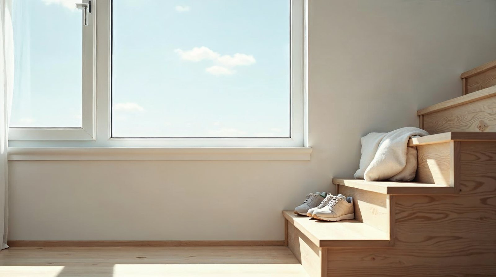
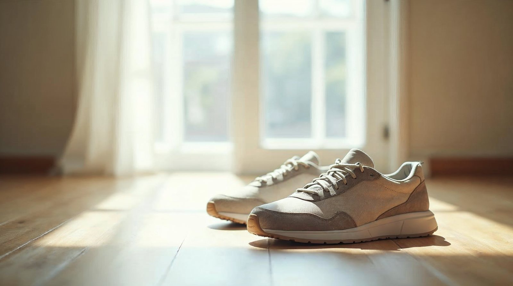
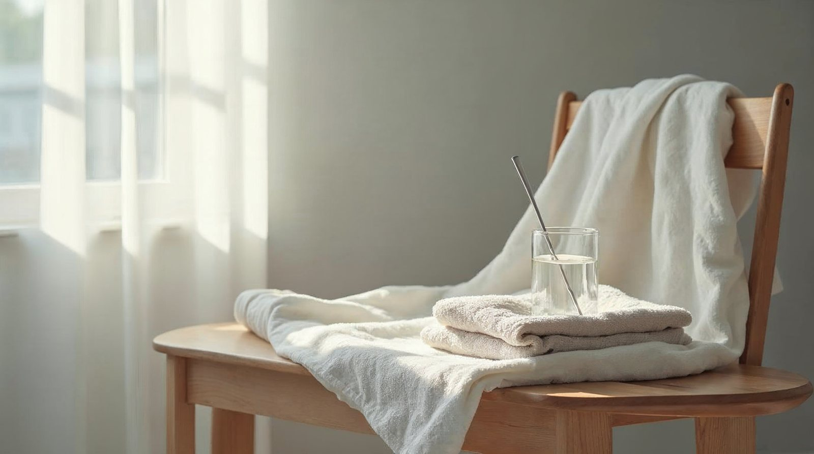
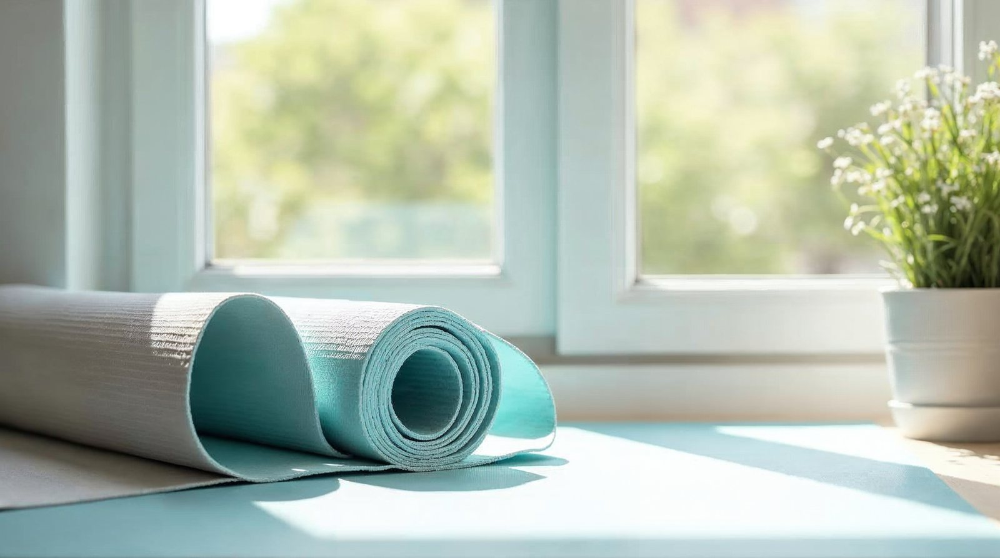
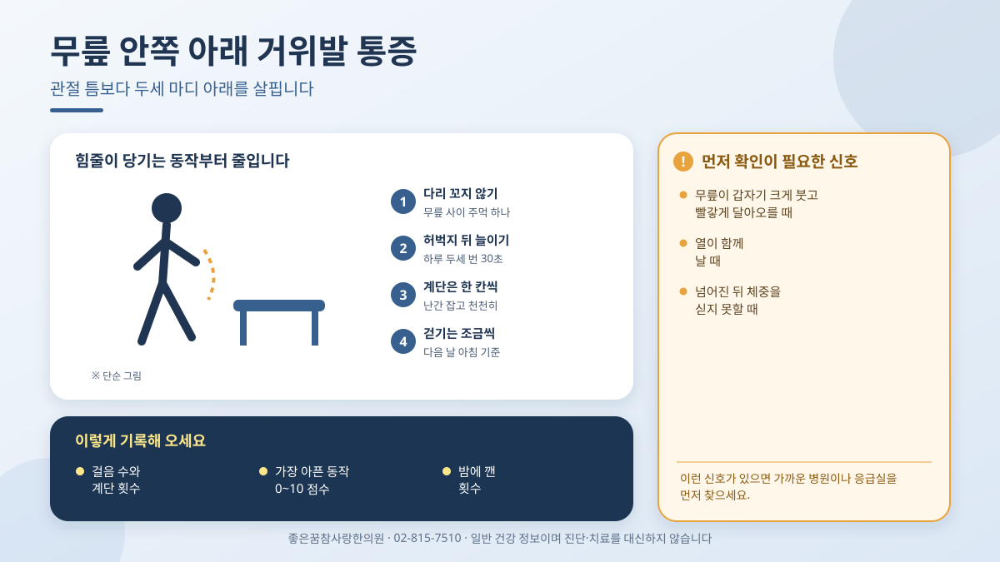

이종호 한의사 감수좋은꿈참사랑한의원 대표원장 (한의사 면허번호 19769)발행 2026-11-26 · 수정 2026-11-26
이 글의 차례
계단을 한 칸 오르는데 무릎 안쪽 아래가 콕 집히듯 아픕니다. 밤에 옆으로 누워 무릎끼리 닿으면 그 자리가 욱신해서 베개를 끼워야 잠이 옵니다. '나도 이제 무릎 관절이 닳기 시작했나' 하는 걱정을 안고 진료실에 오시는 분이 적지 않습니다.
그런데 손가락으로 아픈 자리를 짚어 보시라고 하면, 무릎 관절 틈이 아니라 그보다 조금 아래, 정강이뼈 안쪽 윗부분을 가리키는 경우가 많습니다. 이 자리는 허벅지 안쪽과 뒤쪽에서 내려온 힘줄 세 가닥이 모여 붙는 곳입니다.
힘줄 세 가닥이 갈래를 이루며 붙는 모양이 거위 발가락을 닮았다고 해서 거위발이라고 부릅니다. 이 힘줄과 그 아래 작은 물주머니에 자극이 쌓여 아픈 것을 흔히 거위발건염, 또는 거위발 점액낭염이라고 합니다.
관절이 닳은 것과는 다른 자리이고 다른 이유로 생기는 경우가 많아서, 어디가 아픈지를 정확히 나누는 것만으로도 걱정의 크기가 달라지곤 합니다. 오늘은 그 구분부터 차근차근 말씀드리겠습니다.
거위발은 무릎의 어디에 있나요
무릎 안쪽 관절선을 먼저 찾아보세요. 무릎을 살짝 굽혔을 때 안쪽에 오목하게 들어가는 틈이 관절선입니다. 거위발은 그 틈에서 손가락 두세 마디쯤 아래, 정강이뼈가 시작되는 안쪽 면에 있습니다.
이곳에 붙는 힘줄은 허벅지 앞쪽을 비스듬히 가로지르는 근육, 허벅지 안쪽을 모으는 근육, 허벅지 뒤쪽의 근육 하나에서 내려옵니다. 세 근육 모두 무릎을 굽히고 다리를 안쪽으로 돌리는 일을 함께 합니다.
힘줄과 뼈 사이에는 마찰을 줄여 주는 얇은 물주머니가 있습니다. 같은 동작이 반복되거나 힘줄이 늘 팽팽하게 당겨지면 이 주머니와 힘줄 끝에 자극이 쌓여 붓고 아프게 됩니다.
왜 무릎 안쪽 아래에 통증이 생길까요
가장 흔한 이유는 갑자기 늘어난 움직임입니다. 걷기 운동을 새로 시작했거나, 등산이나 계단 오르기를 몰아서 했거나, 자전거 안장을 낮게 두고 오래 탔을 때 이 자리가 먼저 신호를 보내는 경우가 많습니다.
허벅지 뒤쪽이 많이 짧아져 있는 것도 이유가 됩니다. 오래 앉아 지내면 허벅지 뒤 근육이 굳어서, 무릎을 펼 때마다 거위발 힘줄이 더 세게 당겨집니다. 아침에 허리를 숙여 손이 바닥에서 한참 떨어진다면 이 부분을 함께 살펴봅니다.
걸을 때 무릎이 안쪽으로 모이는 자세도 관련이 있습니다. 발 아치가 낮거나 엉덩이 바깥쪽 근육이 약하면 한 걸음마다 무릎 안쪽이 조금씩 눌리고 당겨져, 같은 자리에 자극이 반복됩니다.
체중이 늘었거나 무릎 관절 자체에 퇴행이 함께 있는 분, 혈당 관리가 필요한 분에게서 더 자주 보인다는 이야기도 있습니다. 그래서 무릎만 보지 않고 걸음걸이와 생활 전체를 함께 여쭙습니다.
신발도 함께 봅니다. 밑창 안쪽이 유난히 닳은 신발을 오래 신으면 발이 안쪽으로 무너지면서 무릎 안쪽이 당겨지기 쉽습니다. 진료실에 오실 때 자주 신는 운동화를 신고 오시면 밑창 닳은 모양을 함께 살펴볼 수 있습니다.
무릎 관절염, 반월상연골 문제와 어떻게 다른가요
관절염은 관절 틈 자체가 아프고, 오래 걸은 뒤 무릎 전체가 붓거나 아침에 뻣뻣한 느낌이 함께 오는 경우가 많습니다. 거위발건염은 관절 틈보다 아래 한 점을 누르면 아프고, 무릎 전체가 붓는 일은 비교적 드뭅니다.
반월상연골 문제는 관절 틈 안쪽이 아프면서, 무릎을 비틀 때 걸리는 느낌이나 갑자기 펴지지 않는 느낌이 함께 오기도 합니다. 거위발건염은 걸리거나 잠기는 느낌보다는 계단과 다리 꼬기에서 콕 집히는 통증이 중심입니다.
물론 두 가지가 함께 있는 분도 많습니다. 관절염이 있는 무릎에 거위발 자리까지 예민해져 있으면, 관절만 생각하다 이쪽을 놓치기 쉽습니다. 그래서 진료실에서는 아픈 자리를 하나씩 눌러 보며 나누어 봅니다.

집에서 해 볼 수 있는 간단한 확인
의자에 앉아 아픈 무릎을 90도로 굽힙니다. 안쪽 관절 틈을 찾은 뒤 그보다 손가락 두세 마디 아래, 정강이뼈 안쪽 면을 엄지로 지그시 눌러 보세요. 평소 느끼던 그 통증이 그대로 나오는지 확인해 보시면 됩니다.
다음으로 선 자세에서 한쪽 다리로 가볍게 무릎을 굽혀 보세요. 거울을 보며 무릎이 엄지발가락 쪽으로 향하는지, 안쪽으로 쏠리는지를 봅니다. 안쪽으로 쏠리면서 통증이 올라온다면 걸음과 자세를 함께 살필 단서가 됩니다.
이 확인은 진단이 아니라 진료실에서 이야기를 시작하기 위한 준비입니다. 누를 때 아픈 자리와 아프지 않은 자리를 기억해 오시면 진찰이 한결 수월해집니다.
양쪽 무릎을 같은 자리에서 눌러 비교해 보시는 것도 좋습니다. 아프지 않은 쪽은 눌러도 묵직한 정도인데 아픈 쪽만 찌릿하다면, 그 차이가 진료실에서 아주 쓸모 있는 단서가 됩니다.
통증이 몇 주씩 이어지는 데는 이유가 있습니다
거위발 자리는 하루에도 수천 번 쓰이는 곳입니다. 걷고, 앉았다 일어나고, 계단을 오를 때마다 힘줄이 당겨지니, 조금 나아졌다 싶을 때 다시 평소처럼 움직이면 같은 자리가 또 예민해지기 쉽습니다.
또 하나는 아픈 무릎을 감싸느라 생긴 걸음입니다. 아프지 않으려고 무릎을 덜 펴고 걷거나 한쪽에 체중을 덜 싣다 보면, 반대쪽 무릎이나 허리, 발목까지 피곤해집니다. 그래서 오래된 통증일수록 무릎 한 곳보다 걸음 전체를 함께 살펴봅니다.
잠자리 습관도 생각보다 큰 몫을 합니다. 옆으로 누워 위쪽 다리를 아래쪽 무릎 위로 툭 올려 두면, 밤새 무릎 안쪽이 눌린 채로 지내게 됩니다. 낮에 아무리 조심해도 밤마다 같은 자리를 누르고 있다면 회복이 더딜 수밖에 없습니다.

걷기와 운동은 언제, 어떻게 다시 늘리나요
계단에서 통증이 0~10 가운데 2~3 정도로 내려오고, 다음 날 아침에 통증이 더 남지 않는다면 조금씩 늘려 보셔도 됩니다. 기준은 '운동한 다음 날 아침'입니다. 그날은 괜찮다가 다음 날 더 쑤신다면 양을 조금 줄입니다.
늘리는 순서는 평지 걷기 시간, 걷는 속도, 완만한 오르막, 계단과 등산 순서가 무난합니다. 한 번에 두 가지를 같이 늘리지 마시고, 한 가지를 일주일 정도 지켜본 뒤 다음으로 넘어가세요.
운동 전에는 허벅지 앞뒤를 가볍게 풀고 5분 정도 천천히 걷는 것으로 시작하시길 권합니다. 굳은 근육으로 바로 언덕을 오르면 힘줄 끝에 갑자기 부담이 몰리기 쉽습니다.
다른 운동은 해도 괜찮을까요
수영은 무릎에 체중이 덜 실려 비교적 편하게 하실 수 있습니다. 다만 평영처럼 다리를 바깥으로 차며 무릎을 비트는 발차기는 이 자리를 건드릴 수 있어, 자유형 발차기나 물속 걷기가 더 편한 분이 많습니다.
실내 자전거는 안장 높이가 핵심입니다. 페달이 가장 아래에 있을 때 무릎이 살짝만 굽는 높이가 좋고, 너무 낮으면 무릎이 깊게 굽혀지며 힘줄이 더 당겨집니다. 저항은 가볍게, 시간은 짧게 시작해 보세요.
스쿼트나 런지처럼 무릎을 깊게 굽히는 근력 운동은 통증이 가라앉을 때까지 깊이를 얕게 줄이시면 됩니다. 의자에 앉았다 일어나기처럼 범위가 정해진 동작으로 시작해, 무릎이 발끝 방향을 따라가는지 거울로 확인하며 하시길 권합니다.
먼저 이렇게 여쭙니다
처음 오시면 저는 대략 이런 순서로 여쭙니다. 미리 떠올려 오시면 이야기가 훨씬 빨라집니다.
- 아프기 시작한 시기와, 그 무렵 늘어난 운동이나 일이 있었나요?
- 계단 오르기, 내려가기, 쪼그려 앉기 가운데 무엇이 가장 불편한가요?
- 밤에 옆으로 누울 때 무릎끼리 닿으면 아픈가요?
- 아침에 무릎이 붓거나 뻣뻣한 느낌이 있나요?
- 예전에 무릎 관절염이나 연골 문제를 들으신 적이 있나요?
- 혈당이나 체중 관리로 드시는 약이 있나요?
정형외과에서 찍은 사진이나 검사 결과가 있다면 함께 가져와 주세요. 관절 상태를 알고 나면 거위발 자리만의 문제인지, 함께 살펴야 할 부분이 있는지를 정하기가 수월합니다.

일상에서 먼저 해 볼 수 있는 것
통증이 올라온 시기에는 무릎을 아예 쓰지 않기보다 자극을 주는 동작만 줄이는 쪽을 권합니다. 걷기는 평지 위주로 이어 가고, 계단과 언덕은 당분간 횟수를 줄여 보세요.
- 앉을 때 다리를 꼬지 않고, 무릎 사이에 주먹 하나 간격 두기
- 옆으로 누울 때 무릎 사이에 얇은 베개 끼우기
- 계단은 난간을 잡고 한 칸씩 천천히, 내려올 때 아프지 않은 다리부터
- 허벅지 뒤쪽을 하루 두세 번 30초씩 부드럽게 늘이기
- 자전거를 탄다면 안장을 조금 높여 무릎이 덜 굽게 하기
- 걷기 운동은 늘릴 때 일주일에 10분 안쪽으로만 늘리기
허벅지 뒤쪽 스트레칭은 의자에 앉아 한쪽 다리를 앞으로 뻗고, 허리를 편 채 몸을 살짝 앞으로 기울이는 정도면 충분합니다. 당기는 느낌이 기분 좋은 정도에서 멈추시고, 아픈 자리가 더 쑤시면 강도를 낮춥니다.
엉덩이 바깥쪽 근육을 깨우는 운동도 도움이 될 수 있습니다. 옆으로 누워 위쪽 다리를 천천히 들었다 내리는 동작을 열 번씩 해 보세요. 무릎이 안쪽으로 모이는 버릇을 줄이는 데 보탬이 됩니다.
아픈 자리가 화끈거릴 때는 수건에 싼 찬 팩을 10분 정도 대 보시고, 뻐근하고 굳은 느낌이 중심일 때는 따뜻하게 해 주시는 쪽이 편한 분이 많습니다. 어느 쪽이 편한지 느낌을 기억해 오시면 진료에도 참고가 됩니다.
한의원에서 함께 살필 수 있는 경우
- 계단과 다리 꼬기에서 무릎 안쪽 아래가 반복해서 아픈 경우
- 걷기나 등산을 늘린 뒤 같은 자리 통증이 몇 주째 이어지는 경우
- 무릎 관절염이 있으면서 안쪽 아래 한 점이 유난히 예민한 경우
- 허벅지 뒤쪽과 안쪽이 늘 당기고 무릎이 쉽게 피곤한 경우
- 밤에 옆으로 누울 때 무릎 안쪽 통증으로 자주 깨는 경우
좋은꿈참사랑한의원에서는 먼저 아래 '먼저 확인이 필요한' 신호가 없는지 확인합니다. 그다음 아픈 자리를 직접 눌러 보고, 무릎을 굽히고 펴는 범위, 허벅지 근육의 당김, 걸음걸이를 함께 봅니다.
진찰한 내용을 바탕으로 침, 온열 관리, 굳은 허벅지와 골반 주변을 풀어 주는 추나 가운데 지금 상태에 맞는 것을 고릅니다. 힘줄 끝이 오래 예민하게 남아 있다면 체외충격파 상담을 함께 드리기도 합니다. 무엇을 할지는 진찰 뒤에 정하며, 같은 방법이 모든 분께 맞지는 않습니다.
정형외과에서 관절 치료를 받고 계시거나 처방약을 드시는 분은 그대로 이어 가시면 됩니다. 한의원 진료는 그와 나란히 가는 것이고, 드시는 약은 임의로 멈추지 않도록 안내합니다. 한약을 상의할 때는 드시는 약을 먼저 확인하고 신중히 정합니다.
이렇게 기록해 오시면 상담이 쉬워집니다
무릎 통증은 하루 안에서도 오르내립니다. 일주일 정도만 짧게 적어 오시면 어떤 움직임이 이 자리를 건드리는지 금방 보입니다.
- 하루 걸음 수나 걸은 시간, 계단을 오르내린 횟수
- 가장 아팠던 동작과 그때의 통증 정도(0~10)
- 밤에 무릎 때문에 깬 횟수
- 스트레칭이나 찬 팩, 따뜻한 찜질 뒤의 느낌
기록이 거창할 필요는 없습니다. 휴대폰 메모에 한 줄씩만 남겨도, 진료실에서 함께 펼쳐 보면 다음에 무엇을 조절할지가 훨씬 또렷해집니다.

무릎 안쪽 통증과 오래 잘 지내려면
거위발건염은 무릎이 망가졌다는 신호라기보다, 요즘 무릎이 감당하는 일과 근육의 준비 사이에 틈이 생겼다는 신호에 가깝습니다. 그 틈을 조금씩 좁혀 가는 것이 회복의 길입니다.
무릎 안쪽 아래가 아프다고 해서 좋아하던 걷기나 등산을 접으실 필요는 없습니다. 양과 순서를 조절하고, 굳은 근육을 풀고, 걸음을 다듬으면 다시 그 길을 걸으시는 분이 많습니다.
이번 주에는 다리 꼬지 않기와 허벅지 뒤쪽 늘이기, 이 두 가지만 먼저 해 보세요. 다음에 오시면 일주일 동안 계단에서의 느낌이 어떻게 달라졌는지부터 함께 이야기 나누겠습니다.
이런 증상은 먼저 확인이 필요합니다
- 무릎이 갑자기 크게 붓고 빨갛게 달아오르며 열이 함께 나는 경우
- 넘어지거나 부딪힌 뒤 체중을 싣지 못할 만큼 아프거나 무릎이 펴지지 않는 경우
이런 신호가 있으면 한의원보다 가까운 병원이나 응급실을 먼저 찾으세요.
함께 읽으면 좋은 글
- 계단을 오를 때 무릎 안쪽 아래가 콕 집히듯 아프면 체외충격파는 어떻게 살피나요?
- 계단에서 시큰하고 자주 붓는 무릎 퇴행성 관절염은 어떻게 살피나요?
- 무릎 반월상연골이 찢어졌다는 말을 들은 뒤에는 무엇을 살피고 어떻게 지내나요?
- 상도동 언덕길과 계단을 매일 오르내릴 때 무릎은 어떻게 챙기나요?
- 계단을 내려갈 때 무릎이 아프면 한의원에서는 무엇을 먼저 묻나요?

여쭙는 것
- 아프기 시작한 시기와, 그 무렵 늘어난 운동이나 일이 있었나요?
- 계단 오르기, 내려가기, 쪼그려 앉기 가운데 무엇이 가장 불편한가요?
- 밤에 옆으로 누울 때 무릎끼리 닿으면 아픈가요?
생활에서 해 볼 것
- 앉을 때 다리를 꼬지 않고, 무릎 사이에 주먹 하나 간격 두기
- 옆으로 누울 때 무릎 사이에 얇은 베개 끼우기
- 계단은 난간을 잡고 한 칸씩 천천히, 내려올 때 아프지 않은 다리부터
한의원에서 함께 살필 것
- 계단과 다리 꼬기에서 무릎 안쪽 아래가 반복해서 아픈 경우
- 걷기나 등산을 늘린 뒤 같은 자리 통증이 몇 주째 이어지는 경우
- 무릎 관절염이 있으면서 안쪽 아래 한 점이 유난히 예민한 경우
먼저 확인이 필요한 신호
- 무릎이 갑자기 크게 붓고 빨갛게 달아오르며 열이 함께 나는 경우
- 넘어지거나 부딪힌 뒤 체중을 싣지 못할 만큼 아프거나 무릎이 펴지지 않는 경우
한눈에 보는 표
| 구분 | 핵심 |
|---|---|
| 여쭙는 것 | 아프기 시작한 시기와, 그 무렵 늘어난 운동이나 일이 있었나요? 계단 오르기, 내려가기, 쪼그려 앉기 가운데 무엇이 가장 불편한가요? |
| 생활에서 해 볼 것 | 앉을 때 다리를 꼬지 않고, 무릎 사이에 주먹 하나 간격 두기 옆으로 누울 때 무릎 사이에 얇은 베개 끼우기 |
| 한의원에서 함께 살필 것 | 계단과 다리 꼬기에서 무릎 안쪽 아래가 반복해서 아픈 경우 걷기나 등산을 늘린 뒤 같은 자리 통증이 몇 주째 이어지는 경우 |
| 먼저 확인이 필요한 신호 | 무릎이 갑자기 크게 붓고 빨갛게 달아오르며 열이 함께 나는 경우 넘어지거나 부딪힌 뒤 체중을 싣지 못할 만큼 아프거나 무릎이 펴지지 않는 경우 |
자주 묻는 질문
거위발건염과 무릎 관절염은 어떻게 구분하나요?
관절염은 관절 틈 자체가 아프고 무릎 전체가 붓거나 아침에 뻣뻣한 경우가 많습니다. 거위발건염은 관절 틈보다 손가락 두세 마디 아래 한 점을 누르면 아픈 것이 특징입니다. 두 가지가 함께 있는 경우도 있어 진찰로 나누어 봅니다.
아픈 동안 걷기 운동은 쉬어야 하나요?
완전히 쉬기보다 평지 걷기는 이어 가고, 계단과 언덕처럼 자극이 큰 움직임만 줄이는 쪽을 권합니다. 걷는 양은 통증이 다음 날까지 남지 않는 범위에서 조절합니다.
다리를 꼬고 앉으면 왜 더 아픈가요?
다리를 꼬면 아래쪽 무릎 안쪽이 눌리고 힘줄이 당겨진 채로 오래 있게 됩니다. 앉을 때 두 발을 바닥에 두고 무릎 사이를 조금 띄우는 습관만으로도 편해지는 분이 있습니다.
초음파 검사는 꼭 받아야 하나요?
모든 분께 하지는 않습니다. 진찰해 보고 붓기나 물 고임을 확인할 필요가 있다고 판단되면 초음파로 힘줄 주변을 살펴봅니다.
좋은꿈참사랑한의원은 재진 때 지난번 이야기부터 이어서 여쭙니다. 진료시간과 예약은 오시는 길에서 확인하세요.
어디서 상담받을 수 있나요?
좋은꿈참사랑한의원은 서울 동작구 만양로2길 2 신성빌딩 3층·5층(서울 동작구 상도동, 7호선 상도역 3번 출구 근처)에 있습니다. 한의사 3명(이종호 대표원장, 조영기 수석진료원장, 정원영 진료원장)이 진료합니다. 진료시간은 평일 09:30~20:00(점심 13:00~14:00), 토·일·공휴일 09:30~15:00이며, 방문 전 전화로 확인을 권합니다. 예약은 네이버 예약, 카카오톡 상담, 전화 02-815-7510로 받습니다.
이 글은 일반적인 건강 정보이며 개인의 진단이나 치료를 대신하지 않습니다. 증상이 있거나 복용 중인 약이 있다면 진료를 통해 확인하세요. 치료 효과는 개인마다 다를 수 있습니다.
작성 기준: 일반적으로 알려져 있는 건강 정보를 참고해 정리했습니다(대표원장 감수). 증상 기록은 1~2주 동안 하루 1회, 비슷한 시간에 적어 오시면 지난 상태와 비교하기 쉽습니다.